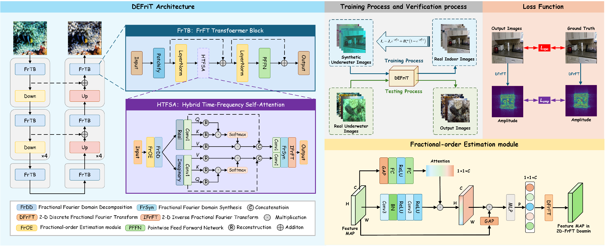
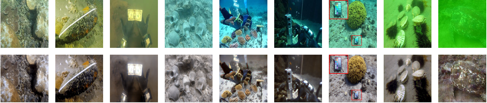
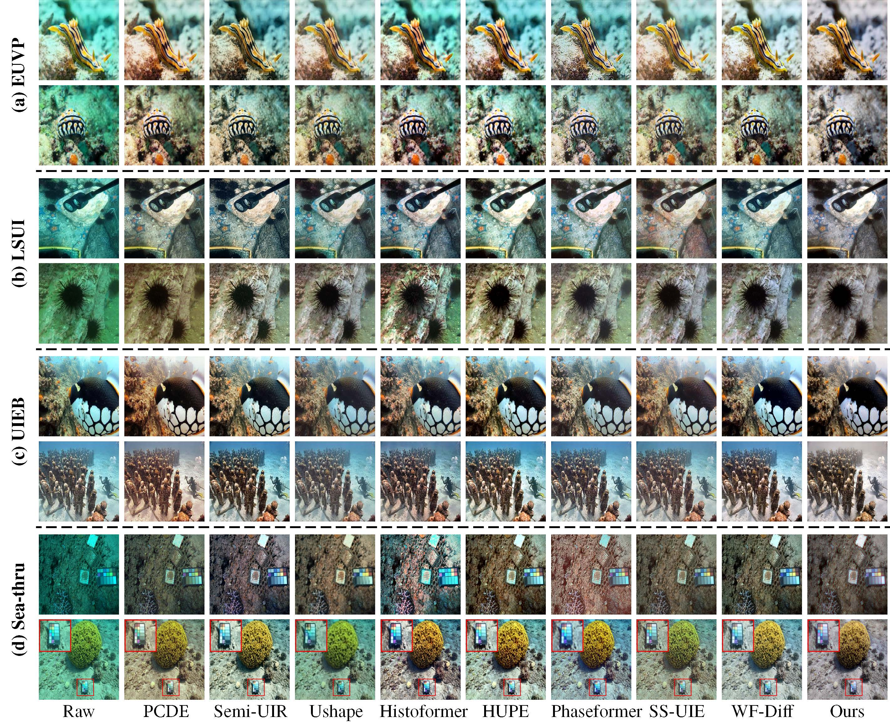

Dual-Domain Fractional Fourier Transformer for Underwater Image Degradation Removal
Chuangxi Chen1*,
Zhuang Zhou1*,
Xudong Zhao2,
Yixiao Yang3,
Xin Zhang1,
Ran Tao2, and
Binghua Su1 1Beijing Institute of Technology, Zhuhai
2Beijing Institute of Technology
3National University of Singapore
*: equal contributions,
: corresponding author
In this letter, we propose DEFriT, a dual-domain framework for underwater image restoration targeting degradation caused by scattering and absorption.
Supervised training is enabled by simulating underwater degradation from land images using a physics-based formation model.
To address the spectrally non-stationary nature of underwater attenuation, we introduce the fractional Fourier transform (FrFT) to bridge spatial and spectral representations.
A Fractional Transform Block (FrTB) with real–imaginary decomposition and Hybrid Time–Frequency Self-Attention (HTFSA) supports joint spatial–spectral modeling.
Empirical analysis shows that degradation mainly affect the amplitude spectrum, with learned fractional orders concentrated in a narrow range (\(p\in[0.48,0.52]\)).
To the best of our knowledge, this is the first work to introduce FrFT into underwater image restoration and to systematically establish a fractional-order prior.
DEFriT achieves state-of-the-art performance on five benchmark datasets.
Proposed DEFriT framework

Overview of the proposed DEFriT framework.
1) Training process and verification process: Paired training data are synthesized from NYU-Depth V2 by following prior physically grounded synthesis practice using \(I_{c}=J_{c} e^{-\beta_{c}^{D} d}+B_{c}^{\infty}\left(1-e^{-\beta_{c}^{B} d}\right),\ c\in \{R,G,B\}\), with \(\beta_c^D, \beta_c^B \in [0,5]\) and \(B_c^\infty \in [0,1]\). We retain 5,000 samples whose Lab distribution matches real underwater scenes, and then perform verification on real underwater images.
2) Fractional-order Estimation module (FrOE): adaptive fractional orders \(p\) are predicted from input features to select an appropriate fractional domain for each sample.
3) FrTB module: feature maps are projected from the spatial domain to the 2D fractional Fourier domain \(\mathcal{F}_p\), enabling frequency-sensitive degradation representation.
4) HTFSA module: real-imaginary branch attention is applied in the fractional domain to aggregate long-range context and degradation-aware spectral cues, followed by inverse mapping to spatial features.
5) DEFriT Architecture: FrOE, FrTB, and HTFSA are cascaded within a UNet-style encoder--bottleneck--decoder backbone, forming an end-to-end dual-domain restoration pipeline.
6) Loss Function: optimization is jointly constrained by \(\mathcal{L}_{total}\), including spatial reconstruction term \(\mathcal{L}_{spa}\) and fractional-spectrum amplitude term \(\mathcal{L}_{amp}\), to balance structural fidelity and spectral consistency.
Results and Applications
1. Results

2. Visualization Comparison

3. Real-World Application Videos
Reference
@ARTICLE{11370686,
author={Chen, Chuangxi and Zhou, Zhuang and Zhao, Xudong and Yang, Yixiao and Zhang, Xin and Tao, Ran and Su, Binghua},
journal={IEEE Signal Processing Letters},
title={Dual-Domain Fractional Fourier Transformer for Underwater Image Degradation Removal},
year={2026},
volume={33},
number={},
pages={1121-1125},
doi={10.1109/LSP.2026.3660912}
}
Acknowledgements:
This work was done when Zhian was an intern at Tencent AI Lab.
Website template is borrowed from GANalyze.